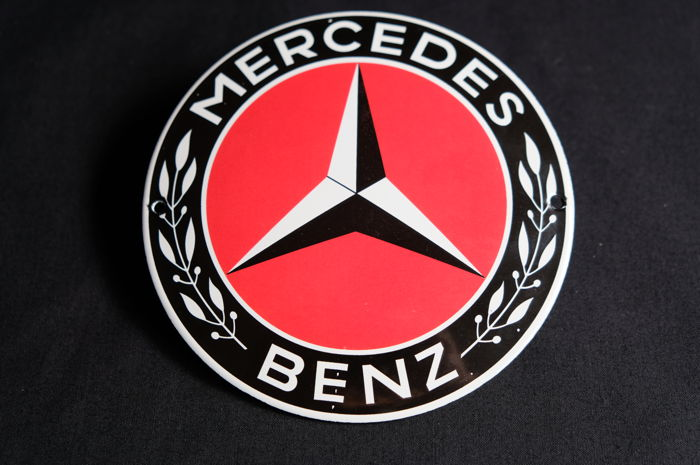
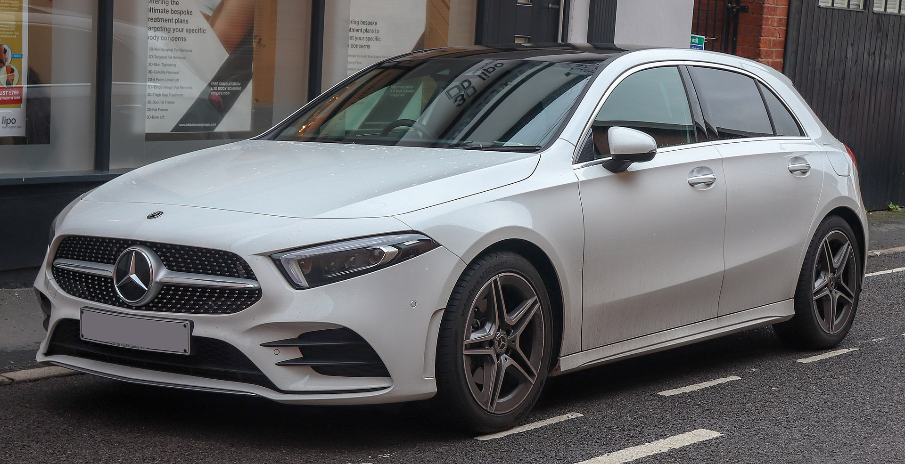
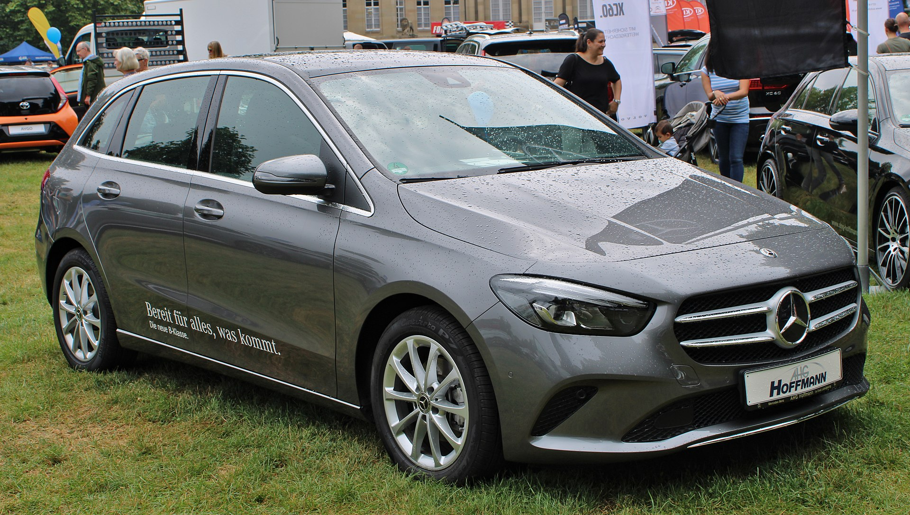
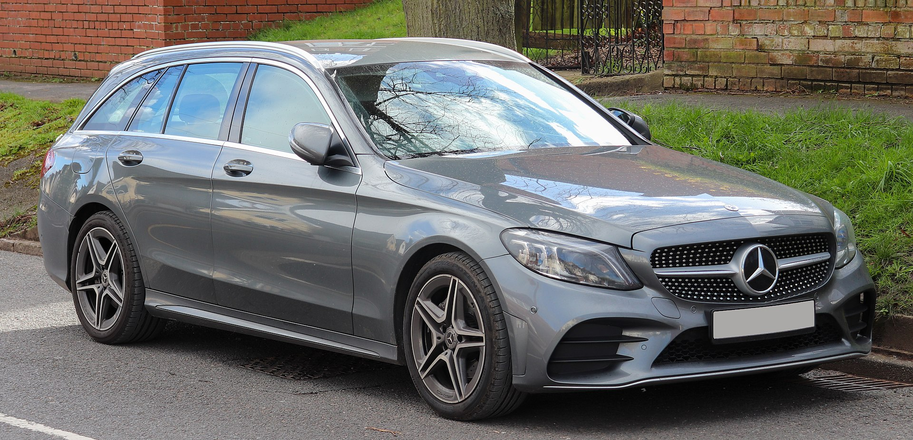
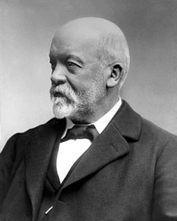

MAINTANCE
The Mercedes-Benz A-Class is a subcompact executive
BENZ
The Mercedes-Benz B-Class is a subcompact
ELNSR
The Mercedes-Benz C-Class is goood
Models

The Mercedes-Benz A-Class is a subcompact executive car (regular subcompact in its first two generations) produced by the German automobile manufacturer Mercedes-Benz. The first generation (W168) was introduced in 1997, the second generation model (W169) appeared in late 2004 and the third generation model (W176) was launched in 2012. The fourth generation model (W177)

The Mercedes-Benz B-Class is a subcompact executive MPV manufactured and marketed by Mercedes-Benz since 2005, and now in its third generation.Similar to the A-Class, though larger, and with larger engines, the European New Car Assessment Programme (Euro NCAP) still classifies it as a hatchback.Though initially available as a sedan and a station wagon

The Mercedes-Benz C-Class is a line of compact executive cars produced by Daimler AG. Introduced in 1993 as a replacement for the 190 (W201) range, the C-Class was the smallest model in the marque's line-up until the W168 A-Class arrived in 1997. The C-Class is built at Mercedes-Benz factories in Sindelfingen and Bremen, Germany as well as numerous satellite factories in other countries
Logo History
1902–1909
1916–1926
1926–1980
List of companies involved in the Holocaust and Diesel emissions scandal

Emil Jellinek, a European automobile entrepreneur who worked with DMG, created the trademark in 1902, naming the 1901 Mercedes 35 hp after his daughter Mercedes Jellinek.

Gottlieb Daimler was born on 17 March 1834 in Schorndorf. After training as a gunsmith and working in France, he attended the Polytechnic School in Stuttgart from 1857 to 1859. After completing various technical activities in France and England,
"About us". Mercedes-Benz AG. Retrieved 29 June 2020. "AMG – The Company". Mercedes-AMG GmbH. Retrieved 29 June 2020. Dudenredaktion; Kleiner, Stefan; Knöbl, Ralf (2015) [First published 1962]. Das Aussprachewörterbuch [The Pronunciation Dictionary] (in German) (7th ed.). Berlin: Dudenverlag. p. 595. ISBN 978-3-411-04067-4. Krech, Eva-Maria; Stock, Eberhard; Hirschfeld, Ursula; Anders, Lutz Christian (2009). Deutsches Aussprachewörterbuch [German Pronunciation Dictionary] (in German). Berlin: Walter de Gruyter. p. 738. ISBN 978-3-11-018202-6. Taylor, Edward; Tajitsu, Naomi; Hummel, Tassilo; Frost, Laurence (11 January 2019). "Volkswagen delivered 10.8 million vehicles in 2018, eyes world No.1 spot". www.reuters.com. Retrieved 11 January 2019.